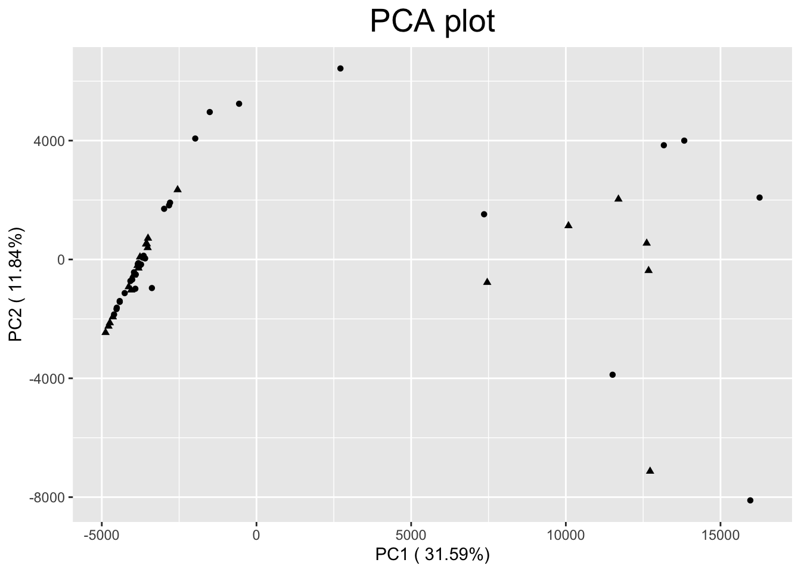
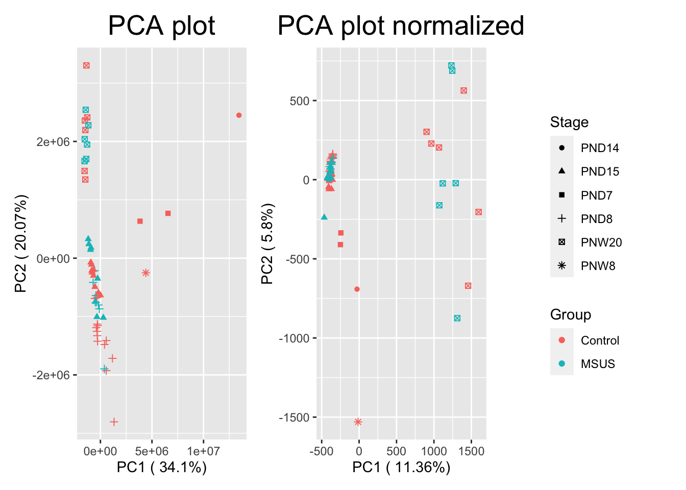
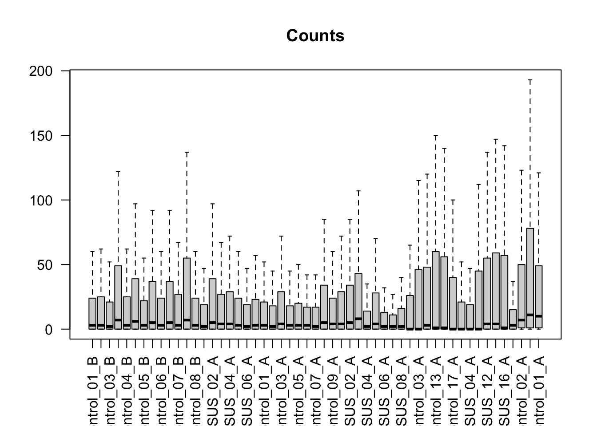
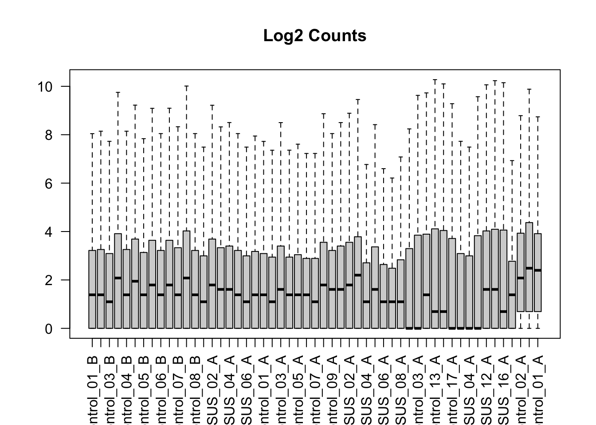
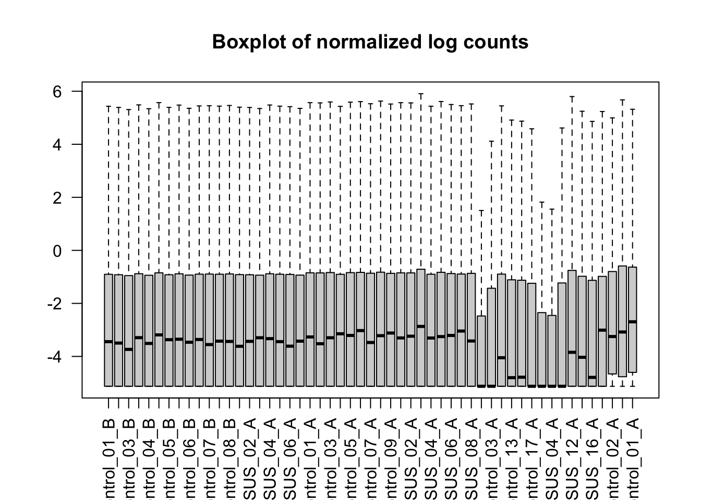
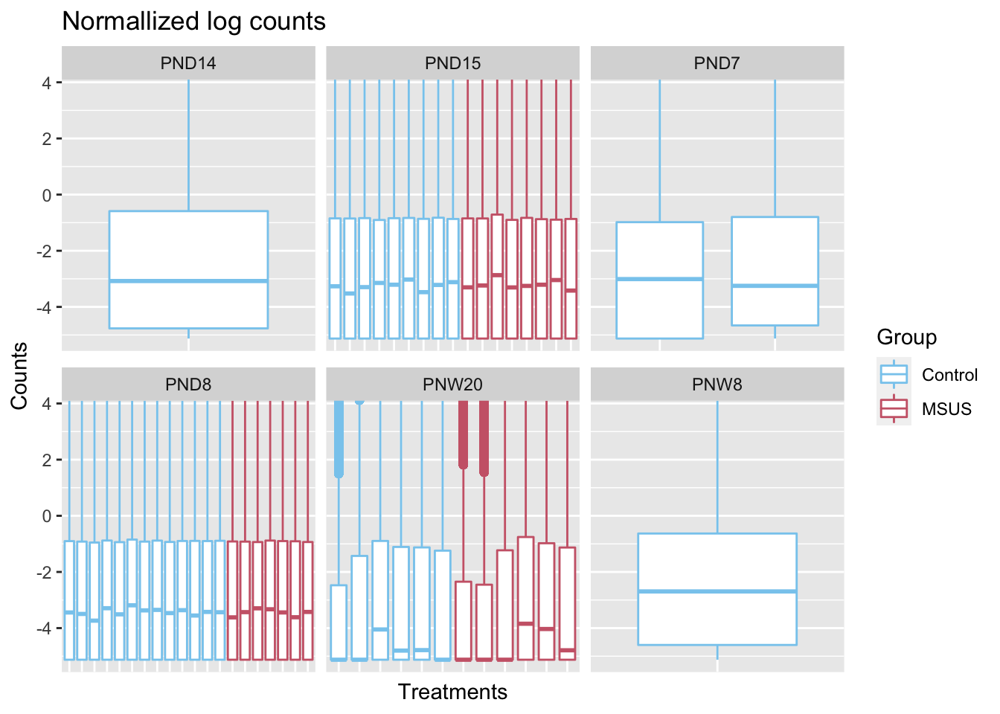
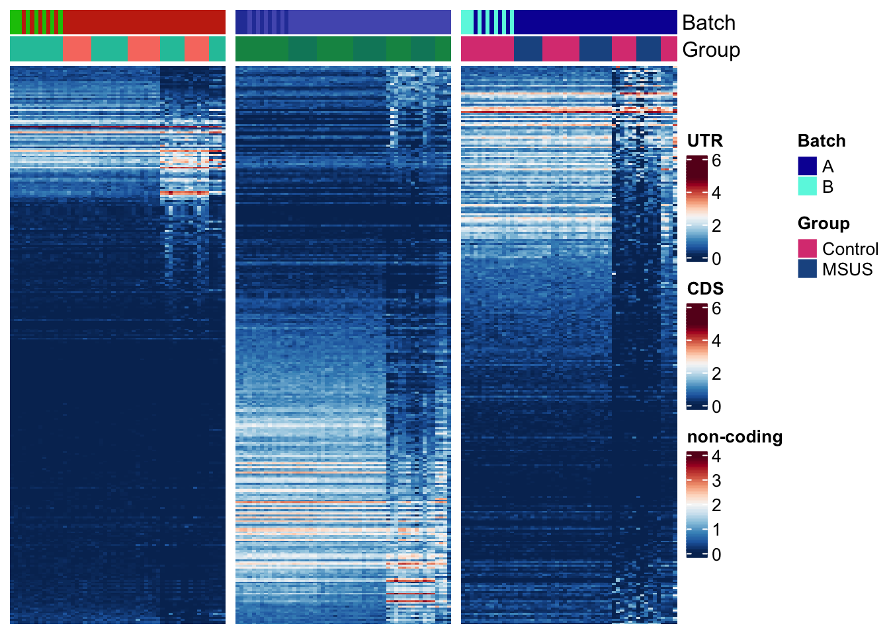

Last updated: 2021-04-11
Checks: 7 0
Knit directory: project6_bc2021/
This reproducible R Markdown analysis was created with workflowr (version 1.6.2). The Checks tab describes the reproducibility checks that were applied when the results were created. The Past versions tab lists the development history.
Great! Since the R Markdown file has been committed to the Git repository, you know the exact version of the code that produced these results.
Great job! The global environment was empty. Objects defined in the global environment can affect the analysis in your R Markdown file in unknown ways. For reproduciblity it’s best to always run the code in an empty environment.
The command set.seed(20210323) was run prior to running the code in the R Markdown file. Setting a seed ensures that any results that rely on randomness, e.g. subsampling or permutations, are reproducible.
Great job! Recording the operating system, R version, and package versions is critical for reproducibility.
Nice! There were no cached chunks for this analysis, so you can be confident that you successfully produced the results during this run.
Great job! Using relative paths to the files within your workflowr project makes it easier to run your code on other machines.
Great! You are using Git for version control. Tracking code development and connecting the code version to the results is critical for reproducibility.
The results in this page were generated with repository version f813151. See the Past versions tab to see a history of the changes made to the R Markdown and HTML files.
Note that you need to be careful to ensure that all relevant files for the analysis have been committed to Git prior to generating the results (you can use wflow_publish or wflow_git_commit). workflowr only checks the R Markdown file, but you know if there are other scripts or data files that it depends on. Below is the status of the Git repository when the results were generated:
Ignored files:
Ignored: .DS_Store
Ignored: .Rhistory
Ignored: analysis/.RDataTmp
Ignored: analysis/.Rhistory
Ignored: data/counts_bins.rds
Note that any generated files, e.g. HTML, png, CSS, etc., are not included in this status report because it is ok for generated content to have uncommitted changes.
These are the previous versions of the repository in which changes were made to the R Markdown (analysis/1_PCA_boxplot_HM_DB.Rmd) and HTML (docs/1_PCA_boxplot_HM_DB.html) files. If you’ve configured a remote Git repository (see ?wflow_git_remote), click on the hyperlinks in the table below to view the files as they were in that past version.
| File | Version | Author | Date | Message |
|---|---|---|---|---|
| Rmd | 01f38a5 | David Bugliani | 2021-03-31 | rename and HTML files |
| html | 01f38a5 | David Bugliani | 2021-03-31 | rename and HTML files |
library('patchwork')
library(workflowr)
library(gridExtra)
library(SummarizedExperiment)Lade nötiges Paket: MatrixGenericsLade nötiges Paket: matrixStats
Attache Paket: 'MatrixGenerics'The following objects are masked from 'package:matrixStats':
colAlls, colAnyNAs, colAnys, colAvgsPerRowSet, colCollapse,
colCounts, colCummaxs, colCummins, colCumprods, colCumsums,
colDiffs, colIQRDiffs, colIQRs, colLogSumExps, colMadDiffs,
colMads, colMaxs, colMeans2, colMedians, colMins, colOrderStats,
colProds, colQuantiles, colRanges, colRanks, colSdDiffs, colSds,
colSums2, colTabulates, colVarDiffs, colVars, colWeightedMads,
colWeightedMeans, colWeightedMedians, colWeightedSds,
colWeightedVars, rowAlls, rowAnyNAs, rowAnys, rowAvgsPerColSet,
rowCollapse, rowCounts, rowCummaxs, rowCummins, rowCumprods,
rowCumsums, rowDiffs, rowIQRDiffs, rowIQRs, rowLogSumExps,
rowMadDiffs, rowMads, rowMaxs, rowMeans2, rowMedians, rowMins,
rowOrderStats, rowProds, rowQuantiles, rowRanges, rowRanks,
rowSdDiffs, rowSds, rowSums2, rowTabulates, rowVarDiffs, rowVars,
rowWeightedMads, rowWeightedMeans, rowWeightedMedians,
rowWeightedSds, rowWeightedVarsLade nötiges Paket: GenomicRangesLade nötiges Paket: stats4Lade nötiges Paket: BiocGenericsLade nötiges Paket: parallel
Attache Paket: 'BiocGenerics'The following objects are masked from 'package:parallel':
clusterApply, clusterApplyLB, clusterCall, clusterEvalQ,
clusterExport, clusterMap, parApply, parCapply, parLapply,
parLapplyLB, parRapply, parSapply, parSapplyLBThe following object is masked from 'package:gridExtra':
combineThe following objects are masked from 'package:stats':
IQR, mad, sd, var, xtabsThe following objects are masked from 'package:base':
anyDuplicated, append, as.data.frame, basename, cbind, colnames,
dirname, do.call, duplicated, eval, evalq, Filter, Find, get, grep,
grepl, intersect, is.unsorted, lapply, Map, mapply, match, mget,
order, paste, pmax, pmax.int, pmin, pmin.int, Position, rank,
rbind, Reduce, rownames, sapply, setdiff, sort, table, tapply,
union, unique, unsplit, which.max, which.minLade nötiges Paket: S4Vectors
Attache Paket: 'S4Vectors'The following object is masked from 'package:base':
expand.gridLade nötiges Paket: IRangesLade nötiges Paket: GenomeInfoDbLade nötiges Paket: BiobaseWelcome to Bioconductor
Vignettes contain introductory material; view with
'browseVignettes()'. To cite Bioconductor, see
'citation("Biobase")', and for packages 'citation("pkgname")'.
Attache Paket: 'Biobase'The following object is masked from 'package:MatrixGenerics':
rowMediansThe following objects are masked from 'package:matrixStats':
anyMissing, rowMedianslibrary(ggplot2)
library(factoextra)Welcome! Want to learn more? See two factoextra-related books at https://goo.gl/ve3WBalibrary(limma)
Attache Paket: 'limma'The following object is masked from 'package:BiocGenerics':
plotMAlibrary(edgeR)
library(reshape2)
library(dplyr)
Attache Paket: 'dplyr'The following object is masked from 'package:Biobase':
combineThe following objects are masked from 'package:GenomicRanges':
intersect, setdiff, unionThe following object is masked from 'package:GenomeInfoDb':
intersectThe following objects are masked from 'package:IRanges':
collapse, desc, intersect, setdiff, slice, unionThe following objects are masked from 'package:S4Vectors':
first, intersect, rename, setdiff, setequal, unionThe following objects are masked from 'package:BiocGenerics':
combine, intersect, setdiff, unionThe following object is masked from 'package:matrixStats':
countThe following object is masked from 'package:gridExtra':
combineThe following objects are masked from 'package:stats':
filter, lagThe following objects are masked from 'package:base':
intersect, setdiff, setequal, unionlibrary(rcartocolor)
library(SEtools)
##Colorcoding for colorblind people
datcol <- data.frame(obj = rep(c("a", "b", "c"), 5), val = 1:15)
cols <- rcartocolor::carto_pal(n = 11, name = "Safe")
hmcols <- rev(RColorBrewer::brewer.pal(n = 11, name = "RdBu"))
##SE object
counts_bins <- readRDS("~/Desktop/git/project6_bc2021/data/counts_bins.rds")
##Function for PCA plotting------
pca_se <- function(se, assay=1, group,...){
dat1 <- t(data.frame(assays(se)[[assay]]))
dat.pr <- prcomp(dat1)
pcaData<-data.frame(data.frame(colData(se), stringsAsFactor = F), dat.pr$x, stringsAsFactor = F)
library(ggplot2)
pr.out2 <- as.data.frame(dat.pr$x)
pr.out2$group <- sapply( strsplit(as.character(row.names(dat1)), "_"), "[[", 1 )
percentage <- round(dat.pr$sdev / sum(dat.pr$sdev) * 100, 2)
percentage <- paste( colnames(pr.out2), "(", paste( as.character(percentage), "%", ")", sep="") )
pca.plot <- ggplot(pcaData, aes(x = PC1, y =PC2, shape=pcaData[,group], ...))+
geom_point(show.legend = FALSE)+
xlab(percentage[1]) + ylab(percentage[2])+
ggtitle("PCA plot") + theme(plot.title = element_text(size = 20, hjust=0.5))
pca.plot
}
pca_se(counts_bins[1:1000,], group = 'Group')
| Version | Author | Date |
|---|---|---|
| 01f38a5 | David Bugliani | 2021-03-31 |
##PCA manually-----
dat1 <- data.frame(assay(counts_bins))
cd <- data.frame(colData(counts_bins), stringsAsFactor = F)
##RAW
dat2 <- t(dat1)
pr.out <- prcomp(dat2)
pcaData<-data.frame(cd, pr.out$x)
##Normallized
y <- DGEList(counts=dat1, samples=cd, group=cd$Samples_ID)
y <- calcNormFactors(y)
norm.dge <- cpm(y, log = TRUE)
dat3 <- t(norm.dge)
pr.out.norm <- prcomp(dat3)
pcaData.norm<-data.frame(cd, pr.out.norm$x)
##Legend extraction function
get_legend<-function(myggplot){
tmp <- ggplot_gtable(ggplot_build(myggplot))
leg <- which(sapply(tmp$grobs, function(x) x$name) == "guide-box")
legend <- tmp$grobs[[leg]]
return(legend)
}
##obtain Legend
pca.plot.legend <- ggplot(pcaData, aes(x = PC1, y =PC2, shape=Stage, color = Group))+
geom_point()
legend <- get_legend(pca.plot.legend)
##X&Y Labels
pr.out2 <- as.data.frame(pr.out$x)
pr.out2$group <- sapply( strsplit(as.character(row.names(dat2)), "_"), "[[", 1 )
percentage <- round(pr.out$sdev / sum(pr.out$sdev) * 100, 2)
percentage <- paste( colnames(pr.out2), "(", paste( as.character(percentage), "%", ")", sep="") )
##X&Y Labels norm plot
pr.out2.norm <- as.data.frame(pr.out.norm$x)
pr.out2.norm$group <- sapply( strsplit(as.character(row.names(dat3)), "_"), "[[", 1 )
percentage.norm <- round(pr.out.norm$sdev / sum(pr.out.norm$sdev) * 100, 2)
percentage.norm <- paste( colnames(pr.out2.norm), "(", paste( as.character(percentage.norm), "%", ")", sep="") )
##PLOTS
require(gridExtra)
pca.plot <- ggplot(pcaData, aes(x = PC1, y =PC2, shape=Stage, color = Group))+
geom_point(show.legend = FALSE)+
xlab(percentage[1]) + ylab(percentage[2])+
ggtitle("PCA plot") + theme(plot.title = element_text(size = 20, hjust=0.5))
pca.plot.norm <- ggplot(pcaData.norm, aes(x = PC1, y =PC2, shape=Stage, color = Group))+
geom_point(show.legend = FALSE)+
xlab(percentage.norm[1]) + ylab(percentage.norm[2])+
ggtitle("PCA plot normalized") + theme(plot.title = element_text(size = 20, hjust=0.5))
pca.plot+pca.plot.norm+legend
| Version | Author | Date |
|---|---|---|
| 01f38a5 | David Bugliani | 2021-03-31 |
##Box plots------
dat1 <- data.frame(assay(counts_bins))
cd <- data.frame(colData(counts_bins), stringsAsFactor = F)
##Raw Counts
boxplot(dat1, main = "Counts", outline=FALSE, las=2)
| Version | Author | Date |
|---|---|---|
| 01f38a5 | David Bugliani | 2021-03-31 |
## log2 counts without normalization
log.counts <- log(dat1+1)
boxplot(log.counts, main = "Log2 Counts", outline=FALSE, las=2) 
| Version | Author | Date |
|---|---|---|
| 01f38a5 | David Bugliani | 2021-03-31 |
##normalized log2 counts
boxplot(norm.dge, main = "Boxplot of normalized log counts", las=2, outline=FALSE) 
| Version | Author | Date |
|---|---|---|
| 01f38a5 | David Bugliani | 2021-03-31 |
##For color coding
cpm2 <- melt(norm.dge)
a <- inner_join(cpm2, cd, by= c("Var2" = "Samples_ID"))
##ggboxplots
box <- ggplot(cpm2, aes(x=Var2, y=value))+
geom_boxplot()+
coord_cartesian(ylim = quantile(cpm2$value, c(0.01, 0.99)))+
facet_wrap(~Var2, scales = "free_x")
box.merge <- ggplot(a, aes(x=Var2, y=value, color = Group))+
geom_boxplot()+
scale_colour_manual(values = cols)+
ggtitle("Normallized log counts")+
theme(axis.text.x=element_blank(), axis.ticks.x=element_blank())+
ylab("Counts") + xlab("Treatments")+
coord_cartesian(ylim = quantile(cpm2$value, c(0.01, 0.99)))+
facet_wrap(~Stage, scales = "free_x")
box.merge
| Version | Author | Date |
|---|---|---|
| 01f38a5 | David Bugliani | 2021-03-31 |
## Heatmaps first 300 rows
rowRanges(counts_bins)GRanges object with 866813 ranges and 25 metadata columns:
seqnames ranges strand | source
<Rle> <IRanges> <Rle> | <FactorList>
ENSMUSG00000000001.4.1 chr3 108107280-108109316 * | HAVANA
ENSMUSG00000000001.4.2 chr3 108109317-108109402 * | HAVANA
ENSMUSG00000000001.4.3 chr3 108109403-108109424 * | HAVANA
ENSMUSG00000000001.4.4 chr3 108109425-108109612 * | HAVANA
ENSMUSG00000000001.4.5 chr3 108109613-108111934 * | HAVANA
... ... ... ... . ...
ENSMUSG00000116997.1.1 chr16 30092482-30092882 * | HAVANA
ENSMUSG00000116998.1.1 chr16 56335586-56336277 * | HAVANA
ENSMUSG00000116998.1.2 chr16 56336278-56337050 * | HAVANA
ENSMUSG00000116998.1.3 chr16 56337051-56337378 * | HAVANA
ENSMUSG00000116999.1.1 chr16 56095714-56096839 * | HAVANA
type score phase
<factor> <NumericList> <IntegerList>
ENSMUSG00000000001.4.1 UTR
ENSMUSG00000000001.4.2 non-coding
ENSMUSG00000000001.4.3 UTR
ENSMUSG00000000001.4.4 CDS 2
ENSMUSG00000000001.4.5 non-coding
... ... ... ...
ENSMUSG00000116997.1.1 non-coding
ENSMUSG00000116998.1.1 non-coding
ENSMUSG00000116998.1.2 non-coding
ENSMUSG00000116998.1.3 non-coding
ENSMUSG00000116999.1.1 non-coding
gene_name level
<CharacterList> <CharacterList>
ENSMUSG00000000001.4.1 Gnai3 2
ENSMUSG00000000001.4.2 Gnai3 2
ENSMUSG00000000001.4.3 Gnai3 2
ENSMUSG00000000001.4.4 Gnai3 2
ENSMUSG00000000001.4.5 Gnai3 2
... ... ...
ENSMUSG00000116997.1.1 RP23-396K21.4 2
ENSMUSG00000116998.1.1 RP23-176C2.2 2
ENSMUSG00000116998.1.2 RP23-176C2.2 2
ENSMUSG00000116998.1.3 RP23-176C2.2 2
ENSMUSG00000116999.1.1 RP24-299G8.2,Senp7 2
havana_gene
<CharacterList>
ENSMUSG00000000001.4.1 OTTMUSG00000007197.1
ENSMUSG00000000001.4.2 OTTMUSG00000007197.1
ENSMUSG00000000001.4.3 OTTMUSG00000007197.1
ENSMUSG00000000001.4.4 OTTMUSG00000007197.1
ENSMUSG00000000001.4.5 OTTMUSG00000007197.1
... ...
ENSMUSG00000116997.1.1 OTTMUSG00000071396.1
ENSMUSG00000116998.1.1 OTTMUSG00000071571.1
ENSMUSG00000116998.1.2 OTTMUSG00000071571.1
ENSMUSG00000116998.1.3 OTTMUSG00000071571.1
ENSMUSG00000116999.1.1 OTTMUSG00000056146.3,OTTMUSG00000071569.1
transcript_name transcript_support_level
<CharacterList> <CharacterList>
ENSMUSG00000000001.4.1 RP23-89M15.4-001 1
ENSMUSG00000000001.4.2
ENSMUSG00000000001.4.3 RP23-89M15.4-001 1
ENSMUSG00000000001.4.4 RP23-89M15.4-001 1
ENSMUSG00000000001.4.5
... ... ...
ENSMUSG00000116997.1.1 RP23-396K21.4-001
ENSMUSG00000116998.1.1 RP23-176C2.2-001
ENSMUSG00000116998.1.2
ENSMUSG00000116998.1.3 RP23-176C2.2-001
ENSMUSG00000116999.1.1 RP24-299G8.2-001
tag havana_transcript exon_number
<CharacterList> <CharacterList> <CharacterList>
ENSMUSG00000000001.4.1 CCDS OTTMUST00000016610.1 9
ENSMUSG00000000001.4.2
ENSMUSG00000000001.4.3 CCDS OTTMUST00000016610.1 8
ENSMUSG00000000001.4.4 CCDS OTTMUST00000016610.1 8
ENSMUSG00000000001.4.5
... ... ... ...
ENSMUSG00000116997.1.1 basic OTTMUST00000172869.1 1
ENSMUSG00000116998.1.1 basic OTTMUST00000173250.1 2
ENSMUSG00000116998.1.2
ENSMUSG00000116998.1.3 basic OTTMUST00000173250.1 1
ENSMUSG00000116999.1.1 basic,ncRNA_host OTTMUST00000173248.1 1
exon_id protein_id
<CharacterList> <CharacterList>
ENSMUSG00000000001.4.1 ENSMUSE00000363317.2 ENSMUSP00000000001.4
ENSMUSG00000000001.4.2
ENSMUSG00000000001.4.3 ENSMUSE00000404895.1 ENSMUSP00000000001.4
ENSMUSG00000000001.4.4 ENSMUSE00000404895.1 ENSMUSP00000000001.4
ENSMUSG00000000001.4.5
... ... ...
ENSMUSG00000116997.1.1 ENSMUSE00001444983.1
ENSMUSG00000116998.1.1 ENSMUSE00001447768.1
ENSMUSG00000116998.1.2
ENSMUSG00000116998.1.3 ENSMUSE00001445775.1
ENSMUSG00000116999.1.1 ENSMUSE00001446226.1
ccdsid ont tx
<CharacterList> <CharacterList> <factor>
ENSMUSG00000000001.4.1 CCDS17751.1 ENSMUST00000000001.4
ENSMUSG00000000001.4.2
ENSMUSG00000000001.4.3 CCDS17751.1 ENSMUST00000000001.4
ENSMUSG00000000001.4.4 CCDS17751.1 ENSMUST00000000001.4
ENSMUSG00000000001.4.5
... ... ... ...
ENSMUSG00000116997.1.1 PGO:0000004 ENSMUST00000232024.1
ENSMUSG00000116998.1.1 PGO:0000004 ENSMUST00000231232.1
ENSMUSG00000116998.1.2
ENSMUSG00000116998.1.3 PGO:0000004 ENSMUST00000231232.1
ENSMUSG00000116999.1.1 PGO:0000004 ENSMUST00000232486.1
gene tx_biotype
<factor> <FactorList>
ENSMUSG00000000001.4.1 ENSMUSG00000000001.4 protein_coding
ENSMUSG00000000001.4.2 ENSMUSG00000000001.4
ENSMUSG00000000001.4.3 ENSMUSG00000000001.4 protein_coding
ENSMUSG00000000001.4.4 ENSMUSG00000000001.4 protein_coding
ENSMUSG00000000001.4.5 ENSMUSG00000000001.4
... ... ...
ENSMUSG00000116997.1.1 ENSMUSG00000116997.1 processed_pseudogene
ENSMUSG00000116998.1.1 ENSMUSG00000116998.1 processed_pseudogene
ENSMUSG00000116998.1.2 ENSMUSG00000116998.1
ENSMUSG00000116998.1.3 ENSMUSG00000116998.1 processed_pseudogene
ENSMUSG00000116999.1.1 ENSMUSG00000116999.1 processed_pseudogene
gene_biotype bin_id
<FactorList> <character>
ENSMUSG00000000001.4.1 protein_coding 1
ENSMUSG00000000001.4.2 protein_coding 2
ENSMUSG00000000001.4.3 protein_coding 3
ENSMUSG00000000001.4.4 protein_coding 4
ENSMUSG00000000001.4.5 protein_coding 5
... ... ...
ENSMUSG00000116997.1.1 processed_pseudogene 1
ENSMUSG00000116998.1.1 processed_pseudogene 1
ENSMUSG00000116998.1.2 processed_pseudogene 2
ENSMUSG00000116998.1.3 processed_pseudogene 3
ENSMUSG00000116999.1.1 processed_pseudogene,protein_coding 1
geneAmbiguous meanLogCPM logWidth meanLogDensity
<logical> <numeric> <numeric> <numeric>
ENSMUSG00000000001.4.1 FALSE 2.9996879 7.61972 0.010650024
ENSMUSG00000000001.4.2 FALSE 0.0373975 4.46591 0.012015109
ENSMUSG00000000001.4.3 FALSE 0.8348628 3.13549 0.046166446
ENSMUSG00000000001.4.4 FALSE 1.5799897 5.24175 0.026482722
ENSMUSG00000000001.4.5 FALSE 0.6805586 7.75061 0.000902612
... ... ... ... ...
ENSMUSG00000116997.1.1 FALSE 0.00273786 5.99645 0.00249755
ENSMUSG00000116998.1.1 FALSE 0.00112318 6.54103 0.00144568
ENSMUSG00000116998.1.2 FALSE 0.00106099 6.65157 0.00129422
ENSMUSG00000116998.1.3 FALSE 0.00162691 5.79606 0.00304921
ENSMUSG00000116999.1.1 TRUE 0.23988531 7.02731 0.00114035
-------
seqinfo: 22 sequences from an unspecified genome; no seqlengthsUTR <- counts_bins[rowRanges(counts_bins)$type == "UTR",]
CDS <- counts_bins[rowRanges(counts_bins)$type == "CDS",]
noncoding <- counts_bins[rowRanges(counts_bins)$type == "non-coding",]
UTR300 <- sechm(UTR, rownames(UTR)[1:300], name = "UTR", isMult = TRUE,show_heatmap_legend = TRUE, hmcols = hmcols )Using assay logcpmCDS300 <- sechm(CDS, rownames(CDS)[1:300], name = "CDS", isMult = TRUE, show_heatmap_legend = TRUE, hmcols = hmcols )Using assay logcpmnon300 <- sechm(noncoding, rownames(noncoding)[1:300], name = "non-coding",hmcols = hmcols )Using assay logcpmUTR300+CDS300+non300
| Version | Author | Date |
|---|---|---|
| 01f38a5 | David Bugliani | 2021-03-31 |
sessionInfo()R version 4.0.4 (2021-02-15)
Platform: x86_64-apple-darwin17.0 (64-bit)
Running under: macOS Big Sur 10.16
Matrix products: default
BLAS: /Library/Frameworks/R.framework/Versions/4.0/Resources/lib/libRblas.dylib
LAPACK: /Library/Frameworks/R.framework/Versions/4.0/Resources/lib/libRlapack.dylib
locale:
[1] de_CH.UTF-8/de_CH.UTF-8/de_CH.UTF-8/C/de_CH.UTF-8/de_CH.UTF-8
attached base packages:
[1] parallel stats4 stats graphics grDevices utils datasets
[8] methods base
other attached packages:
[1] SEtools_1.5.1 rcartocolor_2.0.0
[3] dplyr_1.0.5 reshape2_1.4.4
[5] edgeR_3.32.1 limma_3.46.0
[7] factoextra_1.0.7 ggplot2_3.3.3
[9] SummarizedExperiment_1.20.0 Biobase_2.50.0
[11] GenomicRanges_1.42.0 GenomeInfoDb_1.26.4
[13] IRanges_2.24.1 S4Vectors_0.28.1
[15] BiocGenerics_0.36.0 MatrixGenerics_1.2.1
[17] matrixStats_0.58.0 gridExtra_2.3
[19] patchwork_1.1.1 workflowr_1.6.2
loaded via a namespace (and not attached):
[1] Rtsne_0.15 colorspace_2.0-0 rjson_0.2.20
[4] ellipsis_0.3.1 rprojroot_2.0.2 circlize_0.4.12
[7] XVector_0.30.0 GlobalOptions_0.1.2 fs_1.5.0
[10] clue_0.3-58 farver_2.1.0 ggrepel_0.9.1
[13] bit64_4.0.5 AnnotationDbi_1.52.0 fansi_0.4.2
[16] codetools_0.2-18 splines_4.0.4 cachem_1.0.4
[19] geneplotter_1.68.0 knitr_1.31 jsonlite_1.7.2
[22] Cairo_1.5-12.2 annotate_1.68.0 cluster_2.1.1
[25] png_0.1-7 compiler_4.0.4 httr_1.4.2
[28] assertthat_0.2.1 Matrix_1.3-2 fastmap_1.1.0
[31] later_1.1.0.1 htmltools_0.5.1.1 tools_4.0.4
[34] gtable_0.3.0 glue_1.4.2 GenomeInfoDbData_1.2.4
[37] V8_3.4.0 Rcpp_1.0.6 jquerylib_0.1.3
[40] vctrs_0.3.7 nlme_3.1-152 iterators_1.0.13
[43] xfun_0.22 stringr_1.4.0 openxlsx_4.2.3
[46] lifecycle_1.0.0 XML_3.99-0.6 zlibbioc_1.36.0
[49] scales_1.1.1 TSP_1.1-10 promises_1.2.0.1
[52] RColorBrewer_1.1-2 ComplexHeatmap_2.6.2 yaml_2.2.1
[55] curl_4.3 memoise_2.0.0 sass_0.3.1
[58] stringi_1.5.3 RSQLite_2.2.5 highr_0.8
[61] randomcoloR_1.1.0.1 genefilter_1.72.1 foreach_1.5.1
[64] seriation_1.2-9 zip_2.1.1 BiocParallel_1.24.1
[67] shape_1.4.5 rlang_0.4.10 pkgconfig_2.0.3
[70] bitops_1.0-6 evaluate_0.14 lattice_0.20-41
[73] purrr_0.3.4 labeling_0.4.2 bit_4.0.4
[76] tidyselect_1.1.0 plyr_1.8.6 magrittr_2.0.1
[79] DESeq2_1.30.1 R6_2.5.0 generics_0.1.0
[82] DelayedArray_0.16.3 DBI_1.1.1 mgcv_1.8-34
[85] pillar_1.5.1 whisker_0.4 withr_2.4.1
[88] survival_3.2-10 RCurl_1.98-1.3 tibble_3.1.0
[91] crayon_1.4.1 utf8_1.2.1 rmarkdown_2.7
[94] GetoptLong_1.0.5 locfit_1.5-9.4 grid_4.0.4
[97] sva_3.38.0 data.table_1.14.0 blob_1.2.1
[100] git2r_0.28.0 digest_0.6.27 xtable_1.8-4
[103] httpuv_1.5.5 munsell_0.5.0 registry_0.5-1
[106] bslib_0.2.4